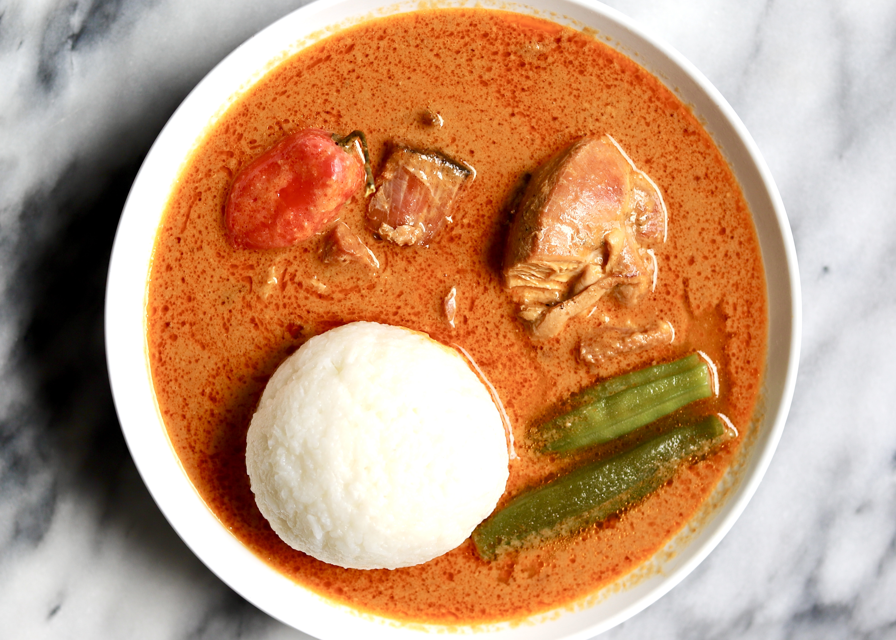

How to Prepare Groundnut Soup in Ghana

Groundnut soup is a delicious Ghanaian dish that can be served with other Ghanaian dishes like rice balls (omotuo), fufu, ampesi, akple, and banku
Now, let's have a look at the step-by-step guide on how to prepare groundnut soup.
Ingredients Needed
-
Cup of groundnut paste
-
4 pieces medium-sized tomatoes
-
4 tbsp tomato paste
-
1 pound meat (goat, chicken, beef, fish)
-
2 litres water
-
3 tbsp salt
-
5 pieces red pepper
-
spices
Instructions
-
Wash meat thoroughly, chop and place into a clean cooking pot.
-
Add seasonings and mixture with your hands thoroughly.
-
Place over low heat and allow to steam for about 10 minutes.
-
Turn the steaming mixture from time to time.
-
Pour the groundnut paste into a clean bowl and add little amount of water. Mix with your hands and ensure you obtain a uniform consistency. Add more paste of you want a thicker mixture.
-
Add the groundnut paste mixture to the steaming pot and stir.
-
Simmer for about 5 - 10 minutes.
-
Wash onions and fresh tomatoes and add to the mixture.
-
Once the tomato and onions have boiled for a while, remove them and blend.
-
Pour the blended content back into the stock.
-
Stir thoroughly.
-
Allow to cook for 8 minutes.
-
Add salt to taste.
Bon apetite!
Back to main page